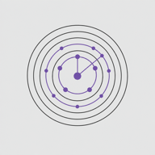

Polyrhythmic harmonic instrument

COPRIMIA
A harmonic sequencer built from divided clocks, integer relationships and interlocking rhythms. Two pitch lanes generate a six-voice field that can move as one or pull apart.
Two four-step pitch lanes, four rhythm generators and integer-derived divisions share one clock without collapsing into one cycle. The result moves between chordal instrument, polyrhythmic sequencer and a source of related pitch and clock CV.
- Two independent four-step pitch sequencers
- Four interrelated rhythm generators
- Six-tone integer-derived harmonic field
- Shared-clock polyrhythm + logic
- Pitch / sequence / clock patch outputs
Desktop VST3 + standalone for Mac and Windows: Get the desktop version · Watch the Ableton Live demo
Release preparation
iOS build prepared- Runs on
- iPhoneiPad
- Formats
- StandaloneAUv3
- Beta
- Android
- Coming
- VST3 · Windows + macOS